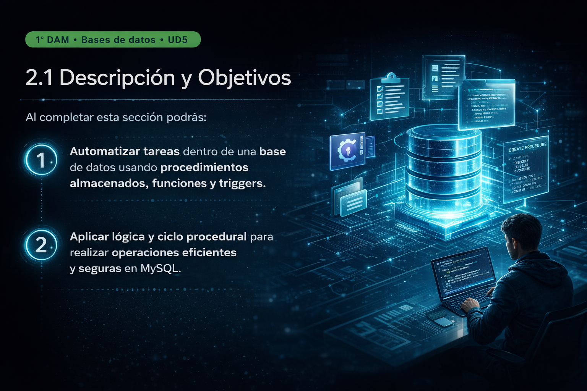

Texto
Descripción de la unidad y objetivos de aprendizaje
Esta unidad didáctica se centra en el lenguaje procedimental en bases de datos, abordando el diseño y uso de procedimientos almacenados, funciones y triggers en MySQL como herramientas clave para la automatización de tareas y la implementación de lógica de negocio.
El alumnado trabajará en un entorno técnico próximo al contexto profesional, utilizando herramientas reales de desarrollo y documentación para construir soluciones funcionales, comprensibles y bien justificadas.

Imagen generada para uso educativo. Licencia CC BY 4.0.
Módulo
Bases de Datos · 1º curso del ciclo de Desarrollo de Aplicaciones Multiplataforma.
Unidad
UD5: Lenguaje procedimental en bases de datos: procedimientos, funciones y triggers.
Temporalización
Aproximadamente 3 semanas de trabajo, con una duración estimada de 18 horas lectivas.
Resultado esperado
Automatizar procesos en MySQL mediante scripts bien estructurados, funcionales y documentados.
Descripción de la unidad
La unidad didáctica se desarrolla dentro del módulo profesional de Bases de Datos y guarda una relación directa con el trabajo previo del alumnado en SQL, diseño relacional y lógica algorítmica. A partir de esos aprendizajes, esta propuesta introduce el uso del lenguaje procedimental de MySQL para ampliar las posibilidades de automatización y control dentro del sistema gestor de bases de datos.
A lo largo de la unidad, el alumnado trabajará con procedimientos almacenados, funciones de usuario y triggers para resolver situaciones reales: validación de datos, encapsulación de lógica, automatización de operaciones repetitivas y respuesta automática a eventos sobre tablas.
El planteamiento es eminentemente práctico, progresivo y orientado al desempeño profesional, de forma que cada actividad contribuya al desarrollo de competencias técnicas, autonomía, capacidad de documentación y uso responsable de herramientas digitales.
Objetivos de aprendizaje
Al finalizar esta unidad, se espera que el alumnado sea capaz de:
1. Comprender el papel del lenguaje procedimental en MySQL y su utilidad en la automatización de tareas dentro de una base de datos.
2. Crear procedimientos almacenados que permitan ejecutar operaciones complejas de forma ordenada y reutilizable.
3. Diseñar funciones SQL capaces de encapsular lógica y devolver resultados útiles en consultas.
4. Implementar triggers que automaticen respuestas ante inserciones, modificaciones o eliminaciones de datos.
5. Utilizar herramientas digitales de desarrollo, documentación y colaboración en un entorno técnico similar al profesional.
6. Documentar, justificar y revisar las soluciones desarrolladas, mejorando la claridad del código y la calidad técnica del producto final.
Conexión con el perfil profesional
El trabajo con procedimientos, funciones y triggers reproduce situaciones habituales en el desarrollo de software y la administración de bases de datos.
- Automatización de operaciones repetitivas.
- Control de integridad y validación de datos.
- Encapsulación de lógica dentro del sistema gestor.
- Mejora de la organización y reutilización del código SQL.
Tecnologías y entorno de trabajo
La unidad se apoya en un ecosistema digital que facilita el aprendizaje técnico, la documentación del proceso y la colaboración.
- MySQL y phpMyAdmin para el desarrollo y administración de la base de datos.
- Docker para desplegar el entorno de trabajo.
- VSCode o AntiGravity para la edición de scripts SQL.
- GitHub y Google Drive para compartir, organizar y documentar las evidencias del proyecto.
Atención a la diversidad y enfoque DUA
El diseño de la unidad contempla diferentes formas de acceso a la información, acompañamiento durante el proceso y opciones variadas para demostrar lo aprendido, siguiendo los principios del Diseño Universal para el Aprendizaje.
- Se combinan explicaciones guiadas, demostraciones, documentación técnica y ejemplos resueltos.
- Se proponen tareas graduadas y apoyos específicos para alumnado con mayores dificultades.
- Se ofrecen retos de ampliación para alumnado con mayor dominio técnico.
- Se promueve el uso flexible de herramientas digitales y el acompañamiento docente durante las prácticas.
Síntesis del sentido de la unidad
Esta propuesta permite que el alumnado avance desde el uso básico de SQL hacia un nivel de mayor complejidad técnica, incorporando automatización, lógica de negocio y herramientas profesionales de desarrollo.
Su valor radica en que conecta el aprendizaje académico con situaciones reales del ámbito tecnológico, favoreciendo la transferencia de conocimientos y la construcción de un producto útil, coherente y aplicable.
Imagen generada mediante inteligencia artificial para uso educativo. Autor de la adaptación: Amin Harazo. Licencia: CC BY 4.0.